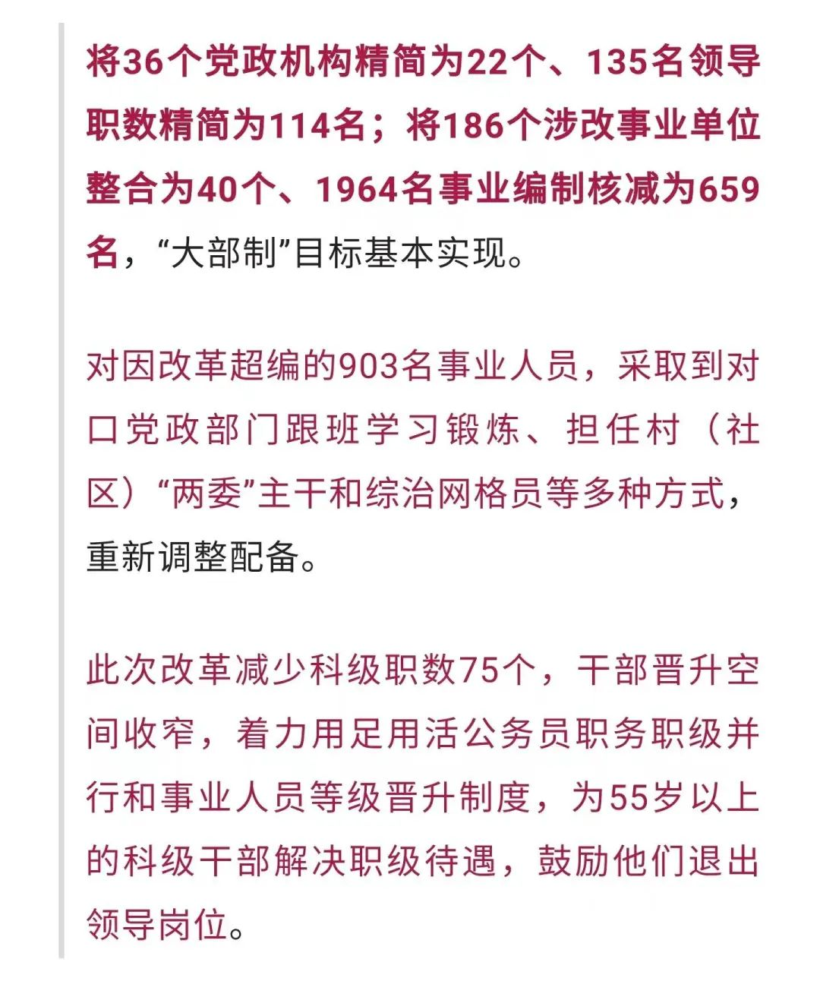

公务员也不是铁饭碗了
原创 V姐万事屋 V姐来了 2022-08-05 20:35 发表于上海
原文链接(长) 原文链接(短)
Hi, 我是V姐。
今天赚钱效应还可以，下午市场拉起来，3400多只股票上涨。半导体板块突突突全部大涨，跑出一堆10厘米和20厘米的大长腿。
随着这波台海局势的变动，国产替代的逻辑再次被强化，这里面首当其冲就是半导体。涨这么凶，还因为叠加了美国进一步的卡脖子。
拜登下周准备签署《芯片与科学法案》，直接补贴和激励美国的半导体产业，金额最高达2800亿美元。同时，外媒报道美国准备限制出口先进工艺相关的芯片设计软件（EDA），进一步阻碍中国芯片设计的进程。
目前EDA行业三巨头总部都在美国，它们在中国市占率80%，国内企业只有15%左右的份额。如果这个限制真落地了，短期对我们芯片研发会有拖累，那么国产替代的逻辑就更强了。除了独立自研，中国芯片没有第二条路了。
另外， **北京楼市昨天悄悄放开了接力贷的口子。**
北京市宣布将昌平区平西府、顺义区福环、顺义区薛大人庄等三宗地作为全龄友好住宅项目试点。
说为了提升老年人生活品质，现在60岁以上老人在特定区域购买新房的话， **子女可以一起贷款。**
同时呢， **降低了普通住宅的标准，** 只需要面积小于140就算普宅，按照首套首付35%，二套60%来，首套享受相应贷款优惠。
四个一线城市，今年楼市没有什么实质性的松绑政策，北京这个局部地区的接力贷放松，还是有点出乎意料。
京沪的老龄化还是比较严重的，尤其上海，21年初60岁以上老人达到36%。
根据链家数据，20年上海成交里面，置换第一大客群是33-35岁的中青年，第二大客群就是53-62岁的老年人。
而且老年人买房一般没那么看中地段，主要是环境不错，附近有医院，适合养老就好。这种接力贷政策出来，鼓励老年人把名下房产给子女，然后腾出房票买新房。
本地老年人不少其实积蓄颇丰，上海老年人全款买房的很多，青睐中外环地区的大两房户型。
7月北京二手房均价75318元/㎡，环比上涨0.34%，成交量环比上涨12%。但是新房不太理想，7月成交4317套，环比6月下滑42%。
北京这个看上去是打老年人的主意，其实是挖土著全家的购买力。不少土著家庭，老年人有老房子，想着卖了也不能贷款，买不了什么新房。这下有儿女帮忙贷款，就可以置换了。客观上说，确实改善了老人居住条件，资产也可以从老破小优化成新房，有条件的家庭可以关注一下。
最后再说一个事儿，现在考公很热，但 **不是所有公务员都是铁饭碗了。**
最近看到“忻州改革”刊发来自山西河曲县委改革办的消息，目前河曲县人口小县机构改革各项任务基本完成，取得了阶段性成效。

**改革过渡期之后，县直部门公用经费支出每年减少1050万元，财政供养人员工资福利、“五险一金”等支出每年减少1.33亿元。**
我们以前就提到过这个趋势，很多朋友不信，在后台吵吵公务员是绝对安全的。事实就是，没钱就是没钱，没钱就得降本增效，不养闲人。
未来人口持续流出的县，大概率会进行类似的改革。
小县城的编制，和小县城的房子一样，不值得ALL IN。
最后，跟大家打个招呼哈，后面20天，我司的业务会非常忙碌，需要我投入所有时间。我们随缘见面，忙完我尽快回来。
让我们在现实世界里，隔空一起搬砖，祝顺利~~